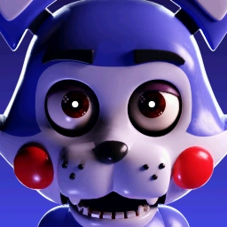
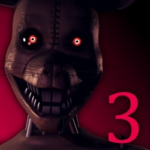

Five Nights at Candy's 1
Něco o hře
Five Nights at Candy's je point-and-click hororová videohra od Emila Ace Macka, založená na ságě Five Nights at Freddy's od Scotta Cawthona. Remasterovaná verze hry byla vydána v srpnu 2019.
Příběh hry
Hra se odehrává v roce 1987, po uzavření Pizzy Freddyho Fazbeara. Po svém uzavření získala Freddyho zábavní konkurenční restaurace, Candy's Burgers and Fries, větší prestiž. Hráč se ocitne v kůži noční stráže, která pracuje u Candy, Mary Schmidtové. Mary se bude muset sedm nocí bránit proti útokům animatroniky (včetně maskota Candy, modré animatronické kočky) podle pokynů muže, který s ní komunikuje prostřednictvím hlasové schránky, který vysvětlí, že nehoda traumatizovala robotické systémy, což je vedlo k tomu, aby byli agresivní vůči dospělým.
Na konci každé noci budete moci být svědky tajemných nahrávek továrny Robowatics Corp., kde byla animatronika postavena. Jak noci postupují, ten chlap na telefonu mu řekne, jak předchozí bezpečnostní stráž, kterou popsal jako šílenou, zmizela beze stopy poté, co poškodila jednu z animatroniky klíčem. Na pátou noc, kromě obvyklého hovoru chlapa na telefonu, uslyšíte druhý tajemný hovor tvořený herním zvukem a zvuky. Sedmé noci bude Mary vyhozena, protože je obviněna z poškození animatroniky. V remasterované edici hry, pokud hráč dokončí Shadow Night, bude poslouchat zaznamenanou zvukovou zprávu, ve které člověk mluví o své ambici vytvořit animatron, selhal do takové míry, že se zdá být mrtvý a deformovaný, zatímco v pozadí bude zobrazena nová verze Candy, ta, která se objeví v budoucí čtvrté kapitole.
Five Nights at Candy's 2
Něco o hře
Five Nights at Candy's 2 je druhým pokračováním série Five Nights at Candy. Odehrává se po první hře a byla vydána 28. února 2016. Navzdory tomu, že se jedná o druhou hru v sérii, Five Nights at Candy's 2 je vlastně pokračováním první i třetí hry.
Příběh hry
Five Nights at Candy's 2 se točí kolem 17leté dívky, která prohraje sázku s přáteli a musí strávit pět nocí v továrně, která obsahuje vylepšené verze animatroniky z první hry, které jsou všechny rozbité a zlomené. Dívka se musí bránit pomocí bezpečnostních kamer a telefonů.

Five Nights at Candy's 3
Něco o hře
Five Nights at Candy's 3 je třetí hra Five Nights at Candy. Bude to poslední hra Five Nights at Candy's Franchise, dokud nebude oficiálně oznámeno Five Nights at Candy's 4. Chronologicky se jedná o první hru v sérii. K dispozici je celkem 8 hvězdiček, zlatá hvězda za dokončení noci 5, červená hvězda za noc 6, modrá hvězda za získání zapomenutého konce klepáním koček Origami z noci 1 - 4 a hvězda Peppermint za získání Ultimate Night. Pak jsou tu stínové hvězdy, které lze získat pouze dokončením stínové výzvy v noci s některými výzvami.
Příběh hry
Výzvy jsou modifikace, které je třeba provést, téměř tvrdý režim. Po dokončení 6. noci se odemknou v nabídce Extras a lze je použít na kteroukoli Noc a Shadow Challenge. Laserové ukazovátko Laserové ukazovátko způsobuje, že baterka je příliš malá na to, aby mohla svítit na nepřítele, takže musí být přesnější při zasažení cílů. Výzva dělá Noc 3 až 5 těžkou kvůli získání Monster Cat. To také dělá zaměření na Monster Rat a Shadow Rat také těžké. Nejtěžší částí je pokusit se zasáhnout Monster Vinnie, kvůli jeho rychlosti, dlouhým útokům, velikosti světla a jeho 360 otáčkám.
Moje hudba k probuzení My Wake-Up Music nutí přehrávač vždy přehrávat magnetofon, jinak usne. To také způsobuje, že čas není rychlý, aby byla noc stále těžká. Pokud se rekordér nepřehrává, obrazovka bude tmavší a tmavší, dokud hráč neskočí. Díky tomu jsou Night 6 a The Shadow Challenge ještě těžší, protože útoky Monster Vinnie jsou delší než přehrávání magnetofonu. Shadow Challenge je těžká kvůli riziku, že vás Shadow Rat zabije. Pokud je magnetofon přehráván pozpátku, udržuje je také vzhůru, jinak by to bylo nemožné. Dezorientovaný magnetofon také funguje a pokud je tichý. Pokud Monster Cat, Monster Vinnie nebo Shadow Rat dostanou magnetofon, znamená to konec hry. Tichá noc Tichá noc způsobuje, že magnetofon je tichý a nevydává žádné zvuky. To může ztížit nebo usnadnit noc v závislosti na noci a situaci. Pokud je to jedna z prvních nocí, je to špatné, protože neslyšíte, kdy končí nebo když je hotovo převíjení. Pokud je to na noc s nimi pod postelí, je to velmi užitečné pro jejich poslech. To je také téměř zakázáno My Wake-Up Music kvůli ztmavnutí obrazovky. Pokud to Dostane Monster Cat, Monster Vinnie nebo Shadow Cat, prakticky to výzvu deaktivuje.
